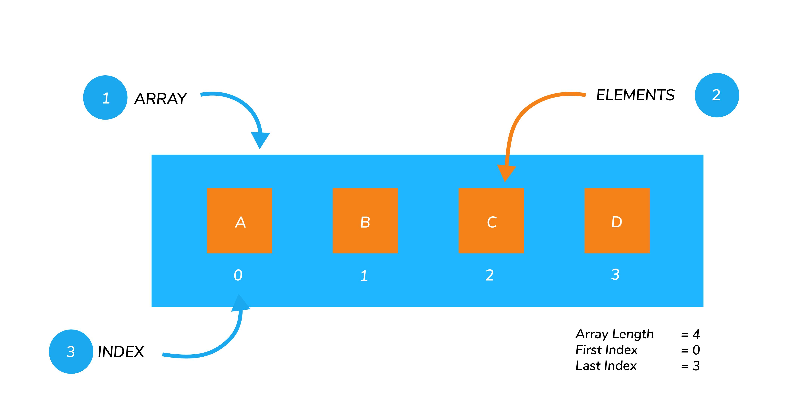

1. Основи масивів
Масив (array) — це спеціальна структура даних, яка дозволяє зберігати декілька значень в одній змінній.

Наприклад, якщо нам потрібно зберегти імена трьох користувачів, ми можемо створити три окремі змінні. Але якщо користувачів багато, створювати окрему змінну для кожного буде незручно. Замість цього можна використати масив:
const users = ["Anna", "John", "Maria"];
Основні особливості масивів:
- Масив може зберігати декілька значень.
- Кожен елемент масиву має свій індекс.
- Індексація починається з 0.
- Масив може містити значення різних типів даних.
- Масиви дозволяють додавати, видаляти та змінювати елементи.
const data = ["Hello", 25, true, null];
Важливо: у JavaScript масиви є особливим типом об'єктів.
const users = ["Anna", "John", "Maria"];
console.log(typeof users); // "object"
Array Literal (Літерал масиву) - це найпростіший і найпоширеніший спосіб створення масиву за допомогою квадратних дужок [].
const arrayName = [element1, element2, element3];const fruits = ["Apple", "Banana", "Orange"];
console.log(fruits);
//["Apple", "Banana", "Orange"]
Масив також можна створити порожнім, без елементів: const users = [];. Пізніше до нього можна буде додавати нові елементи.
Array Constructor(Конструктор масиву) - це спосіб створення масиву за допомогою вбудованого конструктора Array(). Для цього використовують ключове слово new.
const arrayName = new Array();const fruits = new Array("Apple", "Banana", "Orange");
console.log(fruits);
//["Apple", "Banana", "Orange"]
Цей спосіб також дозволяє створити порожній масив: const users = new Array();.
Важлива особливість конструктора: якщо передати конструктору одне числове значення, JavaScript сприйме його як довжину масиву, а не як його елемент.
const numbers = new Array(5);
console.log(numbers.length);
// 5
console.log(numbers);
// [empty × 5]
Як перевірити, що масив є масивом?
Оператор typeof дозволяє визначити тип значення - якщо використати його для масиву, він поверне "object".
Для точної перевірки, чи є значення масивом, у JavaScript існує спеціальний метод Array.isArray(). Метод повертає true — якщо значення є масивом, false — якщо значення не є масивом.
const fruits = ["Apple", "Banana", "Orange"];
const user = {
name: "Anna",
};
console.log(Array.isArray(fruits));
// true
console.log(Array.isArray(user));
// false
console.log(Array.isArray("Hello"));
// false
2. Array Indexes (Індекси масиву)
Кожен елемент масиву має свій порядковий номер, який називається індексом (Index). Індекс потрібен для того, щоб звертатися до конкретного елемента масиву.
Головне правило: у JavaScript індексація масивів починається з 0, а не з 1.
const fruits = ["Apple", "Banana", "Orange", "Mango"];
Зверни увагу:
- Перший елемент — індекс 0.
- Другий елемент — індекс 1.
- Третій елемент — індекс 2.
- Четвертий елемент — індекс 3.
Індекс останнього елемента завжди на одиницю менший за довжину масиву.
const fruits = ["Apple", "Banana", "Orange", "Mango"];
console.log(fruits.length); // 4
Щоб отримати індекс останнього елемента, можна використовувати формулу: array.length - 1
const fruits = ["Apple", "Banana", "Orange", "Mango"];
const lastIndex = fruits.length - 1;
console.log(lastIndex); // 3
Якщо звернутися до індексу, якого немає в масиві, JavaScript поверне undefined. Також якщо звернутися до індексу -1, результатом буде undefined.
const fruits = ["Apple", "Banana", "Orange"];
console.log(fruits[5]); // undefined
console.log(fruits[-1]); // undefined
Щоб отримати конкретний елемент масиву, потрібно звернутися до нього за допомогою його індексу. Для цього використовуються квадратні дужки [].
const fruits = ["Apple", "Banana", "Orange"];
console.log(fruits[0]);
// Apple
console.log(fruits[1]);
// Banana
console.log(fruits[2]);
// Orange
Отримане значення можна зберегти в окрему змінну.
const fruits = ["Apple", "Banana", "Orange"];
const firstFruit = fruits[0];
const secondFruit = fruits[1];
console.log(firstFruit);
// Apple
console.log(secondFruit);
// Banana
Іноді потрібно отримати останній елемент масиву, але ми не знаємо, скільки елементів у ньому буде. Для цього можна використати властивість length.
const fruits = ["Apple", "Banana", "Orange"];
console.log(fruits[fruits.length - 1]);
// Orange
Також у JavaScript є метод at(), який дозволяє отримувати елементи за індексом. Його особливість полягає в тому, що він дозволяє використовувати від'ємні індекси. Наприклад, -1 означає останній елемент, -2 — передостанній.
const fruits = ["Apple", "Banana", "Orange"];
console.log(fruits.at(0));
// Apple
console.log(fruits.at(-1));
// Orange
Якщо масив містить інші масиви, для отримання вкладеного елемента можна використовувати декілька індексів. Такий масив називається багатовимірним (Multidimensional Array).
const numbers = [
[1, 2, 3],
[4, 5, 6],
];
console.log(numbers[0][1]);
// 2
console.log(numbers[1][2]);
// 6
3. Modifying Array Elements (Зміна елементів масиву)
У JavaScript ми можемо не лише отримувати елементи масиву, а й змінювати їхні значення. Для цього потрібно звернутися до потрібного елемента за його індексом і присвоїти йому нове значення.
arrayName[index] = newValue;const fruits = ["Apple", "Banana", "Orange"];
fruits[1] = "Mango";
console.log(fruits);
// ["Apple", "Mango", "Orange"]
Якщо присвоїти значення індексу, якого ще немає в масиві, JavaScript створить новий елемент за цим індексом.
const fruits = ["Apple", "Banana", "Orange"];
fruits[3] = "Mango";
console.log(fruits);
// ["Apple", "Banana", "Orange", "Mango"]
Але є одна важлива особливість. Якщо звернутися до індексу, який значно перевищує довжину масиву, між старими та новим елементами з'являться порожні слоти.
const numbers = [10, 20, 30];
numbers[5] = 60;
console.log(numbers);
// [10, 20, 30, empty × 2, 60]
console.log(numbers.length);
// 6
4. Array Length (Довжина масиву)
Array Length — це кількість позицій масиву, визначена його останнім індексом плюс один.
arrayName.length;const fruits = ["Apple", "Banana", "Orange"];
console.log(fruits.length);
// 3
const numbers = [10, 20, 30, 40, 50];
console.log(numbers.length);
// 5
Важливо: length повертає кількість позицій масиву, а не індекс останнього елемента.
const fruits = ["Apple", "Banana", "Orange"];
console.log(fruits.length);
// 3
console.log(fruits.length - 1);
// 2
Якщо масив порожній, його довжина дорівнює 0.
const users = [];
console.log(users.length); // 0
Особливість властивості length полягає в тому, що їй можна присвоювати нове значення. Тобто ми можемо не лише отримувати довжину масиву, а й змінювати її.
Якщо присвоїти length менше значення, елементи в кінці масиву будуть видалені.
const fruits = ["Apple", "Banana", "Orange", "Mango"];
fruits.length = 2;
console.log(fruits);
// ["Apple", "Banana"]
Якщо присвоїти length більше значення, масив збільшиться, але нові елементи будуть порожніми слотами.
const numbers = [10, 20, 30];
numbers.length = 5;
console.log(numbers);
// [10, 20, 30, empty × 2]
console.log(numbers.length);
// 5
Зверни увагу: JavaScript не заповнює нові позиції значеннями undefined як звичайними елементами — це саме порожні слоти (empty slots).